Friends of
Unionville.
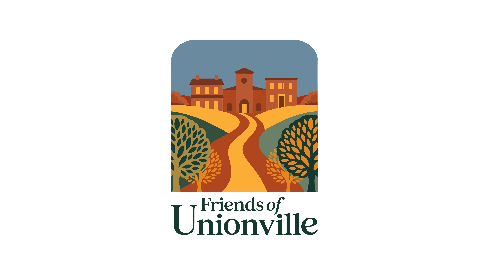
01. Executive Summary
Preserving Heritage.
Friends of Unionville is a dedicated non-profit focused on enhancing and stewarding a historic 1706 village. I engineered a mature, sophisticated identity system that pairs the neighborhood's rich architectural legacy with a vision for modern, walkable thriving communities, ensuring the Village remains a healthy and welcoming place for generations to come.
02. Context
Situational Awareness
Rooted in heritage dating back to 1706, Unionville boasts preserved architecture and a deep sense of place. The organization seeks to foster partnerships between residents and business owners to design safe pedestrian access and steward the historic village's unique character.
03. The Core Problem
Problem Definition
As a new non-profit, Friends of Unionville needed a mature identity that felt immediately established. The challenge was to reflect the "Crossroads" theme—where the village's history met its modern community needs—without relying on clichés, centering instead on the concepts of vibrant togetherness and scenic nature.
04. Constraints
Risk & Trade-offs
The identity had to perform across diverse touchpoints: from historic trail signage to digital community platforms. We deliberately avoided blue to differentiate from other local organizations, focusing instead on a palette of greens and reds that evoke the village's historic and natural environment.
05. Objectives
Success Criteria
Set a "Mature & Sophisticated" standard for civic branding. Success was measured by the successful launch of the community partnership program and the widespread adoption of the identity as a symbol of walkable, connected village life.
06. Strategy & Thinking
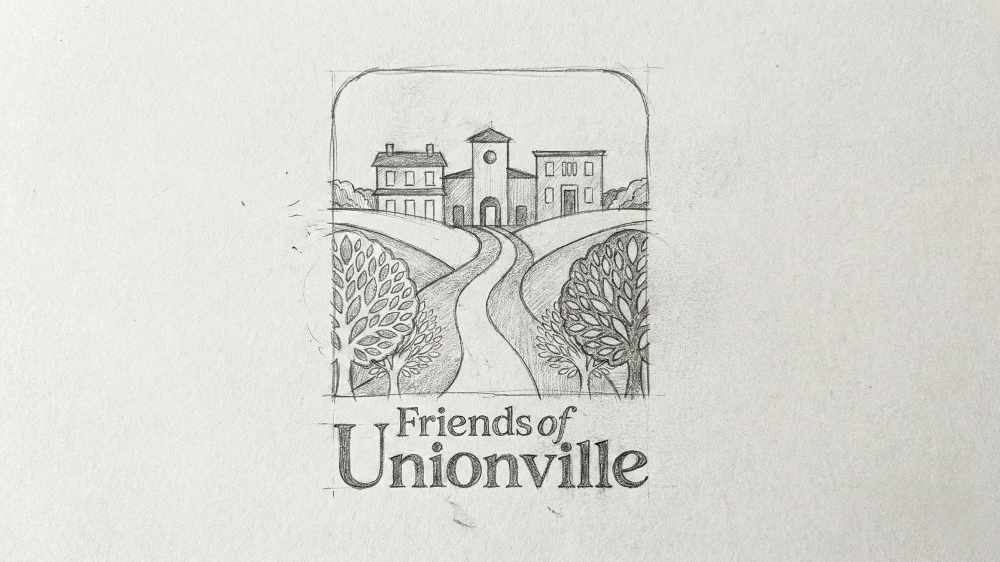
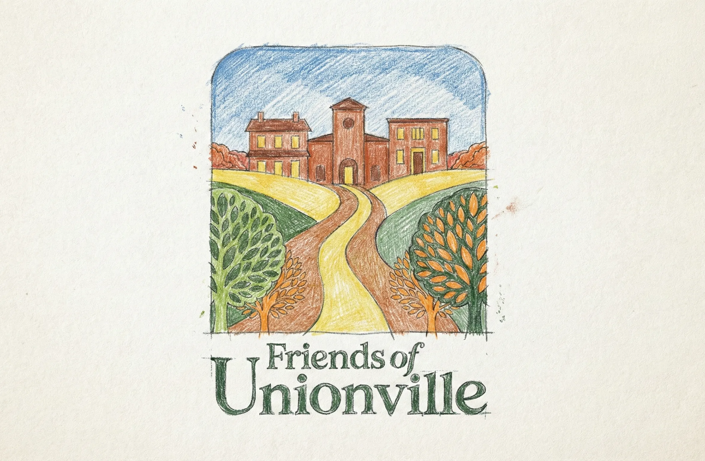
07. Design Decisions
Architectural Harmony.
A mature serif typeface was selected to ground the brand in the village's 18th-century roots. The color system utilizes deep greens and vibrant reds to reflect the community's connection to native plants, open spaces, and historic brickwork, avoiding the typical blue palettes of competing organizations.
System Architecture
Brand Kit.
AaBb
Heritage Serif (Sophisticated Authority)
// Fully Custom Typeface: Hand-crafted and digitized directly from original conceptual sketches to ensure a completely unique brand identity.
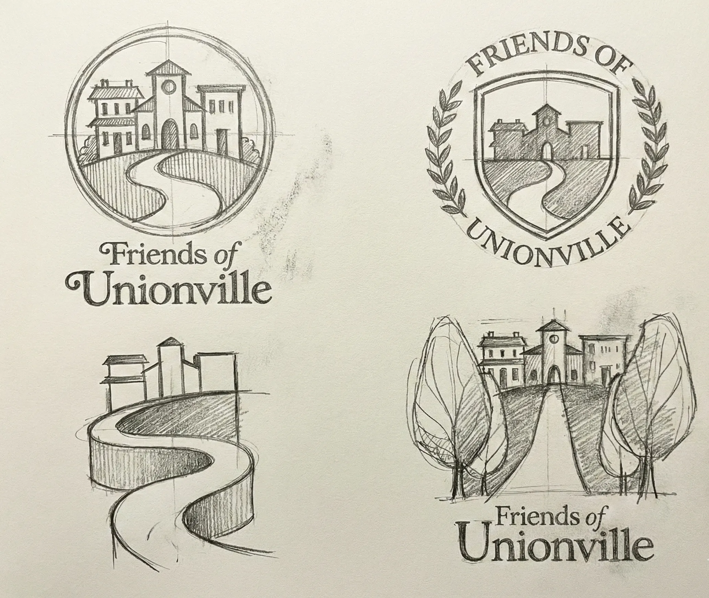
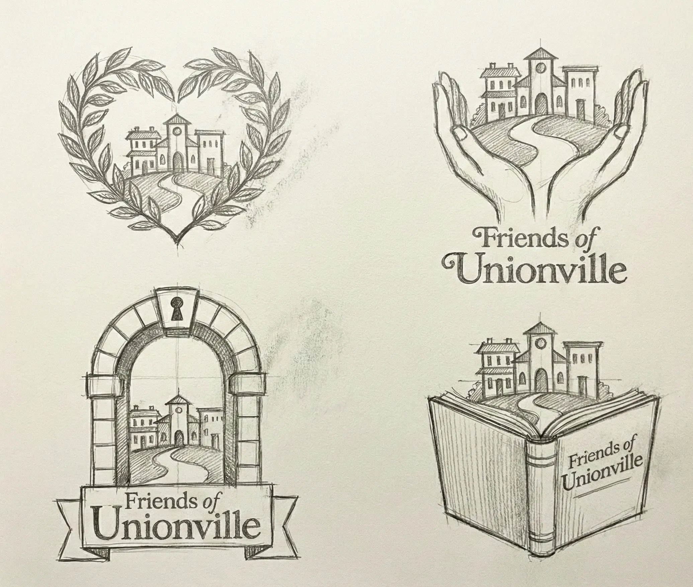
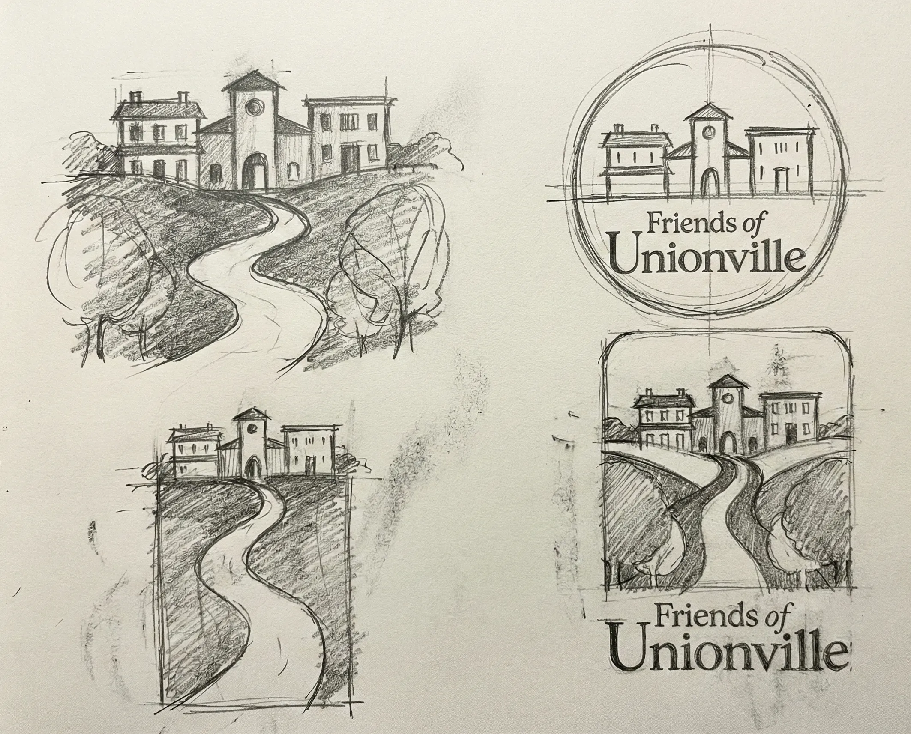
08. Execution & Deliverables
Proof of Completion
Delivered a comprehensive identity manual, design specifications for village trail wayfinding, and a strategic brand platform that unites artisans, business owners, and residents.
09. Outcome & Impact
Was It Worth It?
The identity successfully grounded the new non-profit as a mature authority on village heritage. The "Crossroads" concept has become a rallying point for the community, leading to renewed interest in walkable trail development and architectural preservation.
10. Reflection & Learning
Maturity Signal
Preservation branding requires a deep respect for physical history. This project proved that combining historic 1706 cues with modern community needs can create a lasting, high-equity asset that honors the past while securing a resilient future for the village.
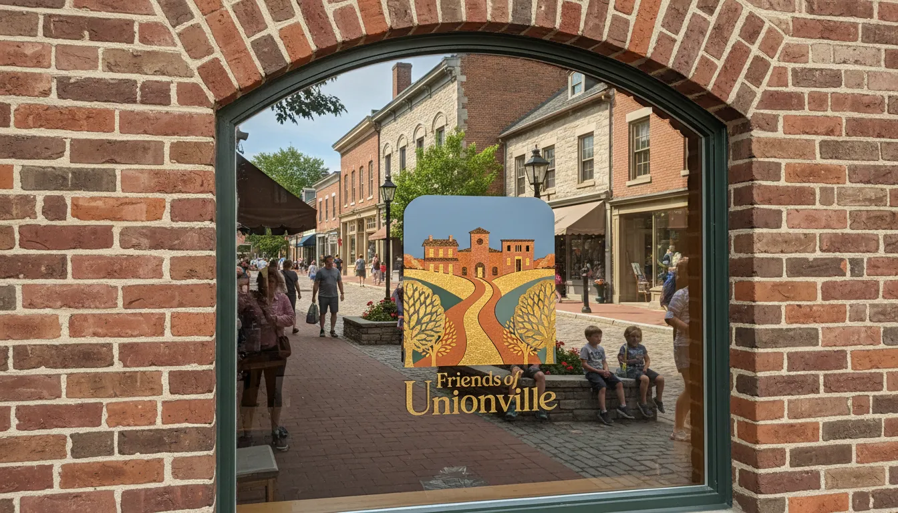
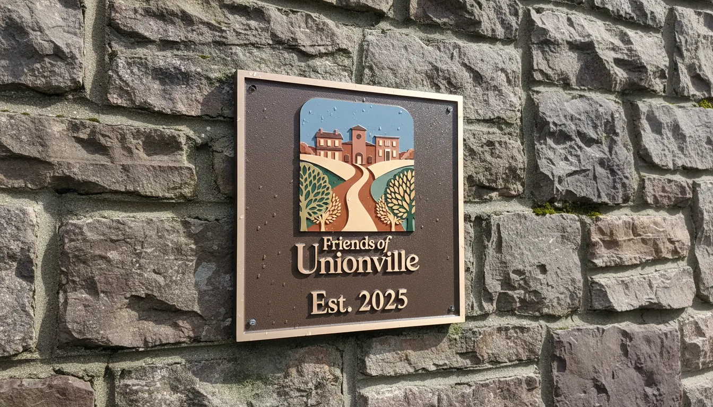
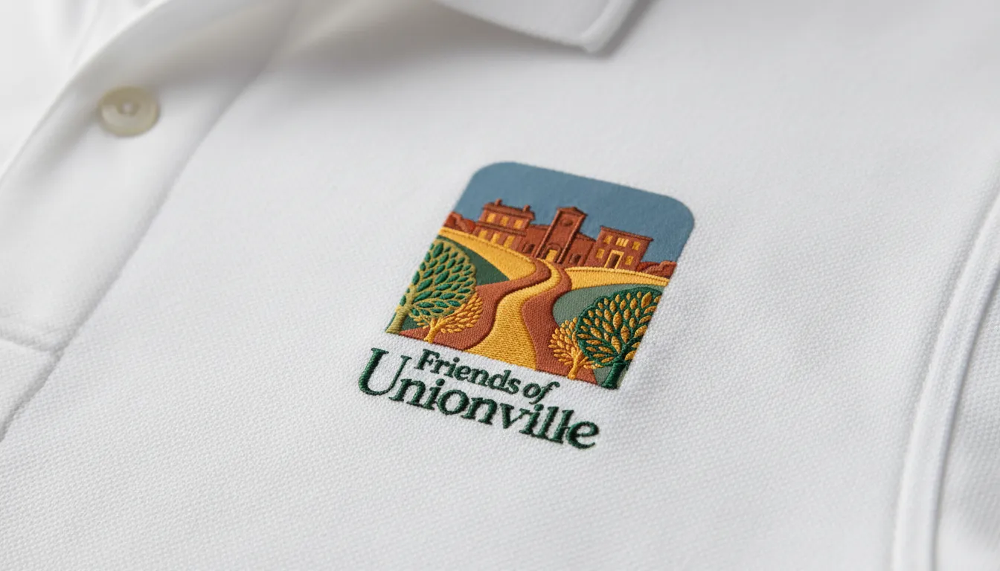
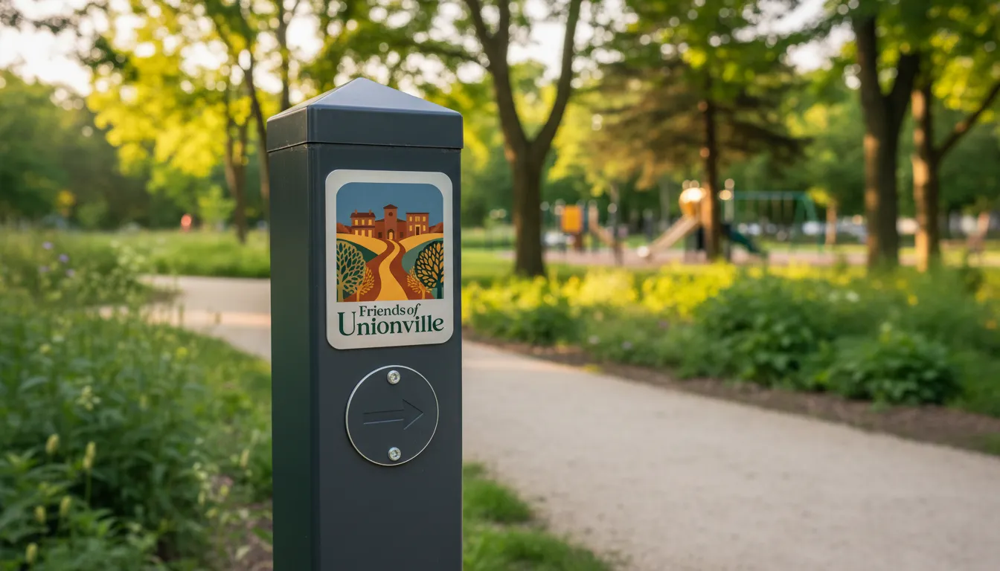
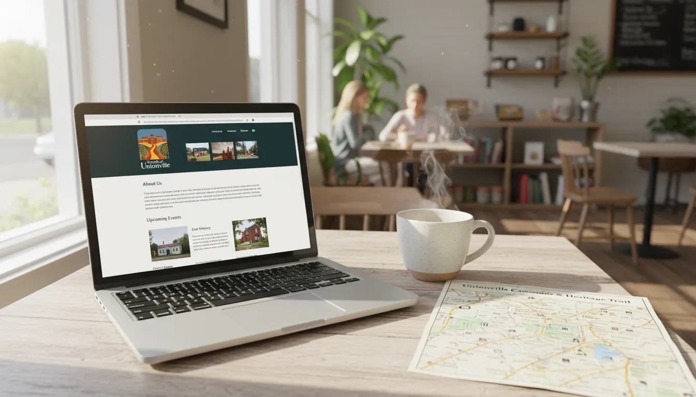
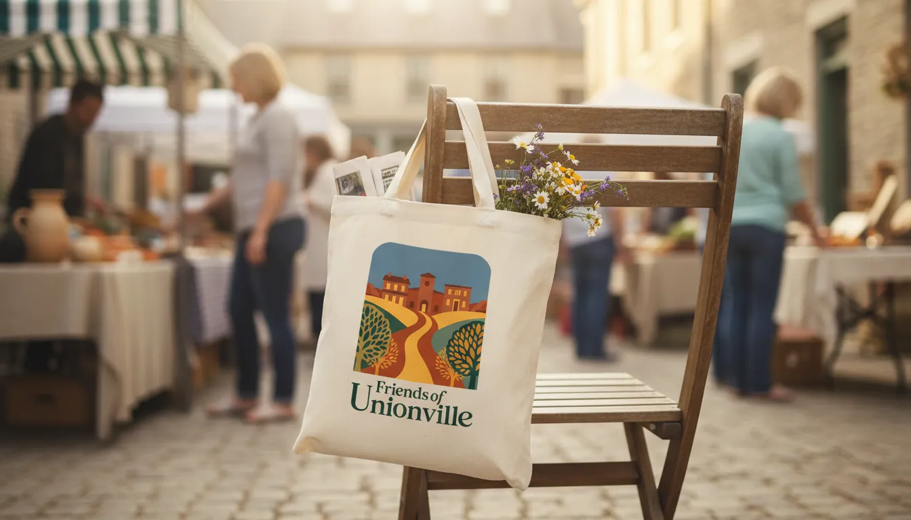
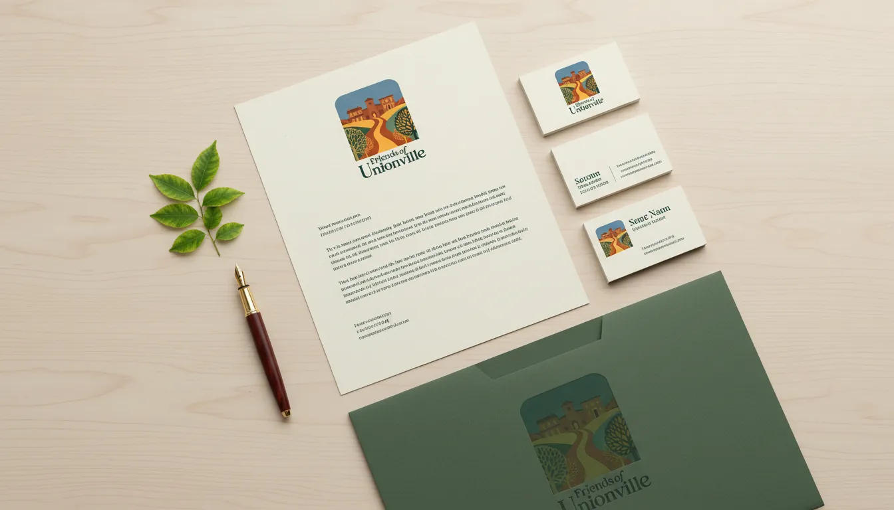
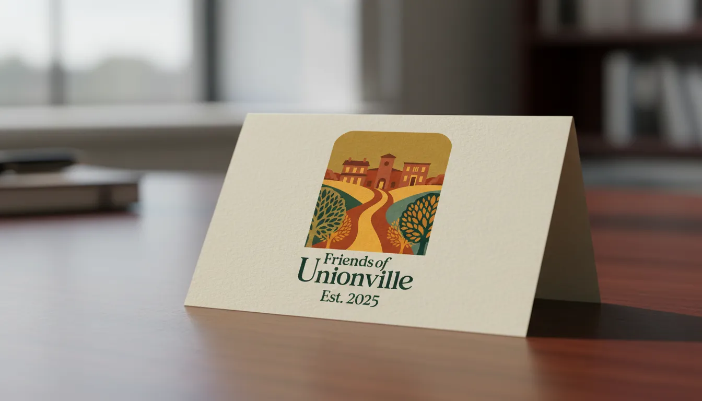
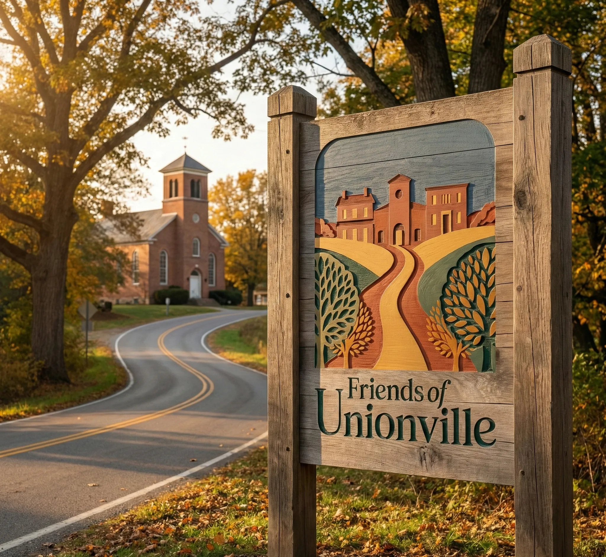